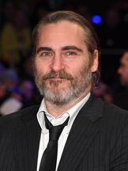
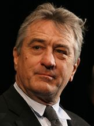
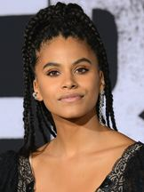
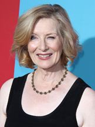
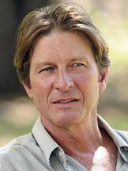
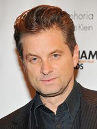
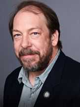
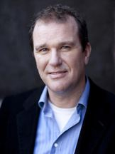
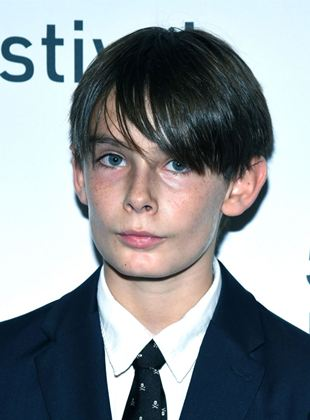

Dentre as estrelas do filme, estão presentes:

Joaquin Rafael Phoenix, nascido em San Juan, 28 de outubro de 1974, é um ator, produtor e ativista norte-americano. Por seu trabalho como ator, Phoenix recebeu um Grammy, dois Globo de Ouro e quatro indicações ao Óscar, vencendo como melhor ator na cerimônia de 2020 por sua atuação em Joker no ano de 2019

Robert Anthony De Niro Jr, nascido em Nova Iorque, 17 de agosto de 1943, é um ator, diretor e produtor de cinema norte-americano de origem italiana e irlandesa.

Zazie Olivia Beetz, nascida em Berlim, 1 de junho de 1991, é uma atriz teuto-americana, mais conhecida por seu papel como sophie em joker (2019)

Frances Hardman Conroy, nascida em Monroe, 13 de novembro de 1953, é uma atriz estadunidense que fez o papel de penny em coringa.

Peter Brett Cullen nascido a 26 de agosto de 1956 é um ator norte-americano que aparece em numerosos filmes e séries de televisão.

Franklin Shea Whigham Jr. (nascido em 5 de janeiro de 1969) é um ator americano, mais conhecido por interpretar o detetive.

Bill Camp, nascido em 1963 é um ator americano. Ele desempenhou papéis coadjuvantes, como em coringa, que interpretou o segundo detetive.

Douglas Hodge, nascido em 25 de fevereiro de 1960 é um ator, diretor e músico inglês que interpretou o alfred em joker (2019).

Dante Pereira-Olson é um ator americano, mais conhecido por seus papéis nos filmes You Were Never Really Here e Joker, onde interpretou a versão infantil de Bruce Wayne, nascido em 2009 com um grande talento.